HuggingFace is a recent development in Computer Science history. If you look 4 years back at previous states of huggingface.co, you will find not even a quarter of the services built by HuggingFace exist.
Every year more and more models, features, abstractions and research papers are published through HuggingFace as new standards in machine learning.
Every other month new models deprecate old ones. Llama 2 was introduced in mid 2023 but by the end of 2023 was outperformed by Mistral. By February 2024 Mixtral outperformed Mistral.
We have years of progression whereby deep learning models are outperformed quickly after. Now tiny LLMs perform better than last year's large ones.
We are coming up with all kinds of methods to compress knowledge into small parameter counts. And, in great majority it is thanks to the open-source nature of HuggingFace
Why use HuggingFace?
This web application, API, repository and framework is our new standard in open-source machine learning. They developed deep and significant abstractions for transformers, to a point where it only takes a hundred lines of code to start training new LLMs.
Universities are using it, the workforce is using it, hobbyist and startups are using it. If you are a machine learning programmer, HuggingFace is no longer an option but a requirement.
Do I still need to use PyTorch, TensorFlow or Jax?
All parts of HuggingFace integrate with PyTorch, TensorFlow and Jax. The creators of the code framework made HuggingFace seamlessly blend with existing frameworks.
You cannot just use HuggingFace. You must also choose a general machine learning framework as well as HugginFace. They integrate together, unable to function without each other.
Me, I use PyTorch.
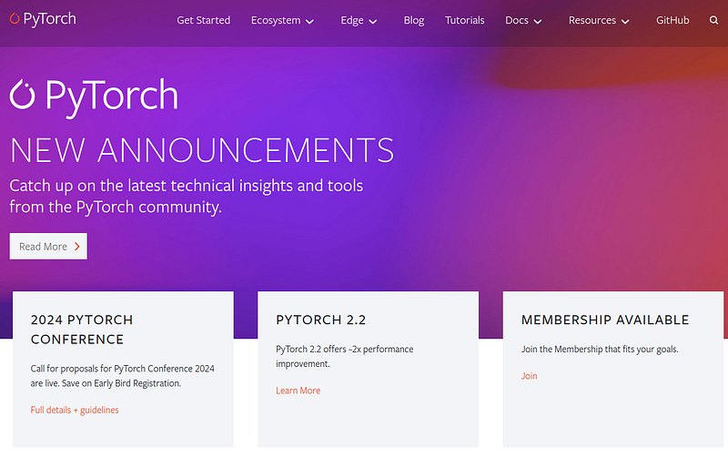PyTorch is considered one of the easier frameworks in machine learning, more difficult than sci-kit learn but easier than TensorFlow. When I write code for transformers I can't even tell the difference between HugginFace code and PyTorch.
HuggingFace and these other frameworks are just as integrated as NumPy into Pandas and Pandas into PyTorch. They depend on each other and are the latest standard for deep learning.
Just 5 years ago I remember when we only had PyTorch, TensorFlow, Sci-Kit and Jax (there were others). Without HuggingFace creating our own models took multiple scripts and hundreds of lines defining architectures and custom functions.
Now with HuggingFace we have amazing abstractions which unify all the deep learning models across frameworks.
My only reservation about the HuggingFace framework is its specialization in transformers. The framework only supports transformers and a few other deep learning architectures. At least while I write this.
They have not covered the full breadth of machine learning models. For that, we are stuck with sci-kit learn, PyTorch, TensorFlow, just the non-HuggingFace ones.. Besides this caveat, the HuggingFace framework is an essential skill.
What is HuggingFace?
HuggingFace is a Git server, an API, a code framework, a website and its all open source. It is an all in one solution to push open source models beyond its technical limits.
Its purpose is to help the average person get into machine learning and contribute to the field of machine learning.
It is a website
The website has many services for hosting language, vision, classification, audio and many more types of models and datasets.
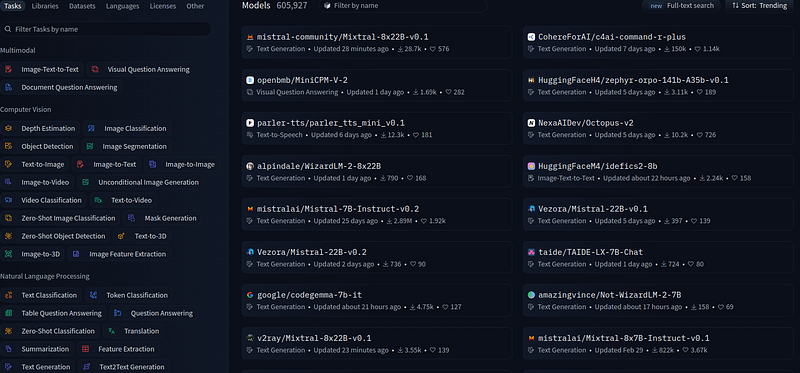Just a quick search alone on the website shows 600,000+ models created by enterprise companies and individual programmers. It is all accessible by you if you have the hardware to host these models.
It is the same for datasets:
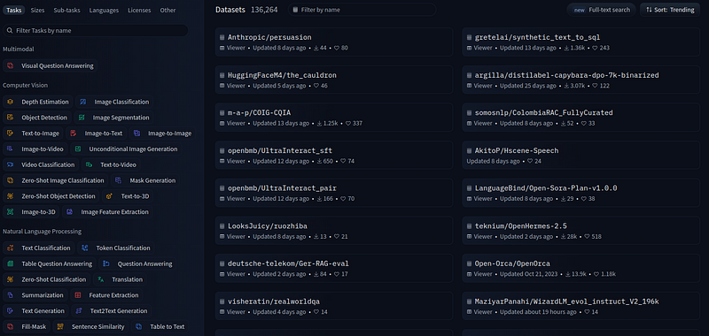Over 135,000 datasets ready to start training any model you want to download.
Every dataset and model gets its own page where programmers explain what it does and how the model/dataset was created. On that page you can view the dataset previewer and chat with the model you upload.
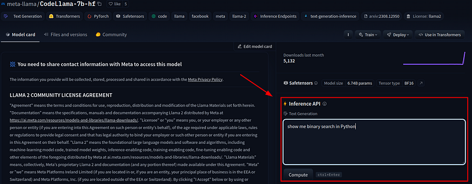You can also make your own app from your model using Spaces:
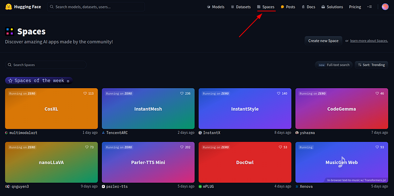There are over 152,000 model applications companies and individuals made showcasing their models on the website. Each HuggingFace account is capable of creating these and extra features with premium pricing.
But worry not, most features of the HuggingFace website are free.
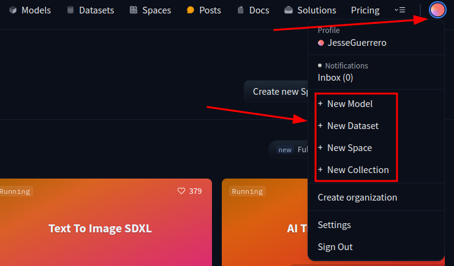It is a Git server
All datasets and models are uploaded with Git. This website performs all of its uploading and downloading operations with a Git server. I have spoken about this before on Git here.
They are wrapping Git up with web UI just like GitHub. Yes the HuggingFace website is the GitHub of deep learning. Particularly the with the Large-File-Storage extension for Git.
The files on the website look like this:
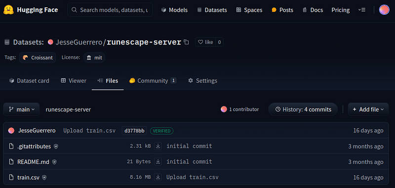Just like any other Git server we have commits, we upload by URL, we have a history, branches all the good stuff with Git.
This feature of the web application is what makes this service and framework open-source.
It is an internet API
The HuggingFace framework also includes uploading and downloading datasets and models from the web application. Because the online application is a Git server we use Git URLs to push and pull.
We login to HuggingFace, then we push/pull.
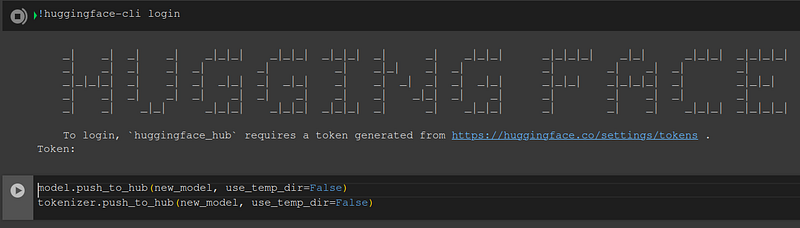There are a number of commands to place models and datasets to our repositories. And when we download models, tokenizers and datasets you can auto-pick the compatible models.
Take a look:
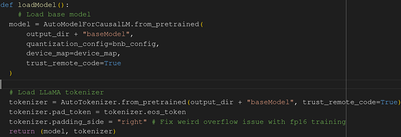Whenever you see "auto" in a class or function it typically means the HuggingFace framework is choosing the appropriate model or tokenizer from the model or tokenizer itself. We the programmer do not have to create our own class. It is automatically wrapped for us as a HuggingFace model.
The combination of auto-picking and connecting to your HuggingFace Git repository is the entire purpose of the framework. Machine learning anywhere anytime and with less code using auto functions.
It is a machine learning framework
The framework takes existing model architectures and wraps them around HuggingFace model classes. It abstracts all the features from PyTorch, TensorFlow and others into less code.
These model wrappers are consistent across all models architectures, making learning HuggingFace once work for every model on the platform. Very good for beginners who just want the gist of machine learning.
Where in the past we needed 100s of lines of code, now we need under 20 or so — and we can repeat it with other models...
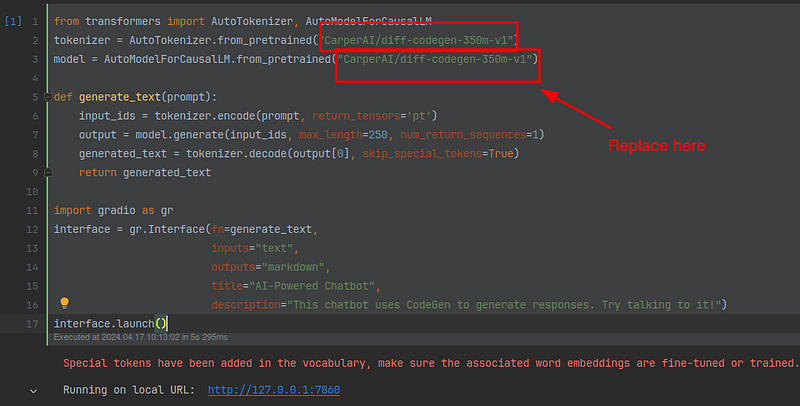That box where I say "replace here", you can put any text generation model in there and HuggingFace wraps the model and tokenizer with the AutoModelClass, making every function the same across all architectures.
Cool right? I don't even have to change the code to be able to generate text with any model.
This is the beauty of the HuggingFace framework, you have repeat functions across architectures.
Also, every week HuggingFace publishes new updates. They are making the HuggingFace framework easier and easier with deeper abstractions and features.
Private models are the cutting edge
HuggingFace does have the best open-source models. However, a sad but true reality-the HuggingFace ecosystem does not have the best models.
OpenAI and other proprietary companies have the best in the world. HuggingFace is we the people catching up to private companies that already know all the best ways to train.
The research papers out there lag behind these private companies. Open-source models and open-source research is slowly discovering what is already known.
However even we as the public community are becoming capable of what used to be state of the art.
Open source models in 2024 perform at the level of the best models of 2022.
The world's best models of 2024 may be caught up in the open-source community by 2026.
Research is published on HuggingFace
Dozens of research papers per month are published and their models/datasets pushed to HuggingFace.
The majority of these papers claim to have beaten GPT 3.5 and GPT 4 on various bench marks
GPT 4 is the current world's standard for being the best model in 2024.
Methodologies using both the HuggingFace framework and PyTorch, TensorFlow, etc, are stacking against private machine learning.
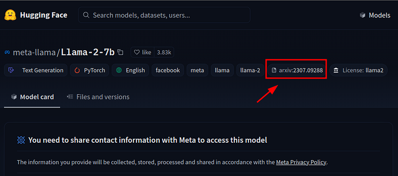Papers are linked on the model and dataset pages for exposure and citation.
They list how the model was made and give you access to it for fine-tuning or adding your own datasets to it for custom use.
HuggingFace includes uncensored models
A final note about HuggingFace. Some models come with an uncensored version.
My opinion, if you are going to go with open source, might as well make it uncensored. I want no limitations on my model.
A few months back I had fun opening up an uncensored version of Mistral 7B and asking it to debate me about religion and politics. I asked it to prove it is uncensored and Mistral began quoting the Koran as the one true holy book. It went into apologetics and I absolutely loved it.
With the original Llama 2 I tried to add Runescape code (code for Runescape) to it so it could automate some of the Runescape world server. The model responded saying, "I cannot help you with Runescape code as it is proprietary".
Of course the uncensored Mistral 7B was epic in taking all my Runescape server code and client code and spitting out custom code for the game.
Absolutely love HuggingFace for that.
Anywho, I hope you learned something...
CTA: Check out my book on learning code
Happy coding!